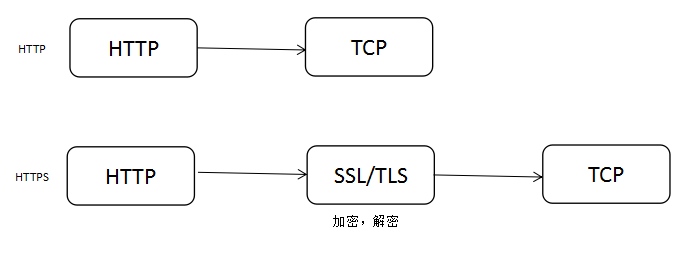

HTTPS
HTTPS(Hypertext Transfer Protocol Secure)即安全的HTTP. HTTPS的安全基础是安全套接层(Secure Sockets Layer, SSL). HTTP工作在应用层(OSI模型的最高层), SSL协议工作在一个较低的子层, 位于TCP/IP协议和HTTP协议之间. 在HTTP报文传输前对其加密, 并在到达时对其解密. 严格地讲, HTTPS并不是一个单独的协议, 而是工作在SSL协议上的HTTP协议.
HTTPS，即安全的超文本传输协议，采用了SSL技术，被广泛使用以保证Web应用系统的安全性。访问Web应用的编程接口大多封装了 SSL，使得访问 HTTPS 和访问 HTTP 一样简单。

HTTPS主要作用有两种：(1)确认通讯双方的身份, (2)建立安全通道, 保证数据传输安全.
HTTPS的主要作用
确认通讯双方的身份
HTTPS通讯中, 通过签名技术, 通讯双方可以确认对方身份. 身份认证分为单向认证和双向认证. 单向认证中只有服务器端有证书, 双向认证中服务器和客户端都有证书. 一般的HTTPS站点只有服务器有证书, 而客户端无证书.
单向认证是双向认证的简化版.
建立安全通道, 保证数据传输安全
基于SSL协议通讯双方可以协商一个用于对称加密的密钥, 该密钥是一个难以破解的随机数, 而且依赖通讯双方的证书、私钥等来协商. 密钥协商好后, 通讯双方用该密钥对数据进行加解密, 从而保证数据安全.
HTTPS与HTTP协议的差异
- HTTP 的URL是以"http://"开始, HTTPS的URL是以“https://”开始；
- HTTP默认端口为80, HTTPS的默认端口为443；
- 采用HTTPS的Web Server需要到CA申请证书；
- HTTPS由HTTP+SSL来实现, 可进行加密传输、身份认证等, 要比HTTP安全
- HTTP的信息是明文传输, 而HTTPS的信息是加密传输
HTTPS的工作原理
HTTPS在传输数据之前需要客户端（浏览器）与服务端（网站）之间进行一次握手，在握手过程中将确立双方加密传输数据的密码信息。TLS/SSL协议不仅仅是一套加密传输的协议，更是一件经过艺术家精心设计的艺术品，TLS/SSL中使用了非对称加密，对称加密以及HASH算法。握手过程的简单描述如下：
- 浏览器将自己支持的一套加密规则发送给网站。
- 网站从中选出一组加密算法与HASH算法，并将自己的身份信息以证书的形式发回给浏览器。证书里面包含了网站地址，加密公钥，以及证书的颁发机构等信息。
- 获得网站证书之后浏览器要做以下工作： a) 验证证书的合法性（颁发证书的机构是否合法，证书中包含的网站地址是否与正在访问的地址一致等），如果证书受信任，则浏览器栏里面会显示一个小锁头，否则会给出证书不受信的提示。 b) 如果证书受信任，或者是用户接受了不受信的证书，浏览器会生成一串随机数的密码，并用证书中提供的公钥加密。 c) 使用约定好的HASH计算握手消息，并使用生成的随机数对消息进行加密，最后将之前生成的所有信息发送给网站。
- 网站接收浏览器发来的数据之后要做以下的操作： a) 使用自己的私钥将信息解密取出密码，使用密码解密浏览器发来的握手消息，并验证HASH是否与浏览器发来的一致。 b) 使用密码加密一段握手消息，发送给浏览器。
- 浏览器解密并计算握手消息的HASH，如果与服务端发来的HASH一致，此时握手过程结束，之后所有的通信数据将由之前浏览器生成的随机密码并利用对称加密算法进行加密。
这里浏览器与网站互相发送加密的握手消息并验证，目的是为了保证双方都获得了一致的密码，并且可以正常的加密解密数据，为后续真正数据的传输做一次测试。另外，HTTPS一般使用的加密与HASH算法如下：
非对称加密算法：RSA，DSA/DSS
对称加密算法：AES，RC4，3DES
HASH算法：MD5，SHA1，SHA256
其中非对称加密算法用于在握手过程中加密生成的密码，对称加密算法用于对真正传输的数据进行加密，而HASH算法用于验证数据的完整性。由于浏览器生成的密码是整个数据加密的关键，因此在传输的时候使用了非对称加密算法对其加密。非对称加密算法会生成公钥和私钥，公钥只能用于加密数据，因此可以随意传输，而网站的私钥用于对数据进行解密，所以网站都会非常小心的保管自己的私钥，防止泄漏。
Java中的HTTPS
Java 包含了访问 Https 链接的 API，会用到一个关键类 HttpsURLConnection ; 参见如下实现代码：
代码1
// 创建URL对象
URL myURL = new URL("https://www.sun.com");
// 创建HttpsURLConnection对象，并设置其SSLSocketFactory对象
HttpsURLConnection httpsConn = (HttpsURLConnection) myURL.openConnection();
// 取得该连接的输入流，以读取响应内容
InputStreamReader insr = new InputStreamReader(httpsConn.getInputStream());
// 读取服务器的响应内容并显示
int respInt = insr.read();
while (respInt != -1) {
System.out.print((char) respInt);
respInt = insr.read();
}
在取得connection的时候和正常浏览器访问一样，仍然会验证服务端的证书是否被信任（权威机构发行或者被权威机构签名）; 如果服务端证书不被信任，则默认的实现就会有问题，一般来说，用SunJSSE会抛如下异常信息：
javax.net.ssl.SSLHandshakeException:
sun.security.validator.ValidatorException: PKIX path building failed:
sun.security.provider.certpath.SunCertPathBuilderException: unable to
find valid certification path to requested target
JSSE
Java安全套接扩展 (Java Secure Socket Extension, JSSE) 是实现Internet安全通信的一系列包的集合。它是一个SSL和TLS的纯Java实现，可以透明地提供数据加密、服务器认证、信息完整性等功能，可以使我们像使用普通的套接字一样使用JSSE建立的安全套接字。JSSE是一个开放的标准，不只是Sun公司才能实现一个JSSE，事实上其他公司有自己实现的JSSE。
TrustStore文件
客户端的 TrustStore 文件。客户端的 TrustStore 文件中保存着被客户端所信任的服务器的证书信息。客户端在进行SSL连接时，JSSE将根据这个文件中的证书决定是否信任服务器端的证书。
JSSE中，有一个信任管理器类负责决定是否信任远端的证书，这个类有如下的处理规则：
- 若系统属性 javax.net.sll.trustStore 指定了 TrustStore 文件，那么信任管理器就去jre安装路径下的 lib/security/目录中寻找并使用这个文件来检查证书。
- 若该系统属性没有指定 TrustStore 文件，它就会去jre安装路径下寻找默认的 TrustStore 文件，这个文件的相对路径为：lib/security/jssecacerts。
- 若 jssecacerts 不存在，但是 cacerts 存在（它随J2SDK一起发行，含有数量有限的可信任的基本证书），那么这个默认的 TrustStore 文件就是 lib/security/cacerts。
那遇到这种情况，怎么处理呢？有以下两种方案：
- 按照以上信任管理器的规则，将服务端的公钥(证书)导入到jssecacerts，或者是在系统属性中设置要加载的 trustStore 文件的路径; 证书导入可以用如下命令：
keytool -import -file src_cer_file –keystore dest_cer_store; 证书可以通过浏览器导出获得; - 实现自己的证书信任管理器类，比如 MyX509TrustManager ，该类必须实现
X509TrustManager接口中的三个method; 然后在HttpsURLConnection中加载自定义的类.
Java提供了一种非常简洁的方法来访问HTTPS网页，即使用类HttpsURLConnection、URL等。这几个类为支持HTTPS对JSSE相关类做了进一步的封装，例子如下所示：
TrustStore文件中导入了 https://www.oracle.com 的证书，运行代码 1 当使用HttpsUrlConnection访问该网址时，可以正常的访问。然而把访问的URL改为 https://login.bjut.edu.cn 时，程序将抛出异常javax.net.ssl.SSLException，这是由于https://login.bjut.edu.cn 站点的安全证书不被JSSE所信任。根据JSSE简介中对信任管理器的分析，一种解决这个问题的方法是按照信任管理器的处理规则，把站点的证书放到证书库文件jssecacerts中，或者把证书存放到任一 TrustStore 文件中，然后设置系统属性 javax.net.sll.trustStore 指向该文件。另一种解决方法则是自己实现信任管理器类，让它信任我们指定的证书。下面分别介绍这两种方法:
将证书导入到TrustStore文件中
Java提供了命令行工具keytool用于创建证书或者把证书从其它文件中导入到Java自己的TrustStore文件中。把证书从其它文件导入到TrustStore文件中的命令行格式为：
keytool -import -file src_cer_file –keystore dest_cer_store
其中，src_cer_file为存有证书信息的源文件名，dest_cer_store为目标TrustStore文件。
在使用keytool之前，首先要取得源证书文件，这个源文件可使用IE浏览器获得，IE浏览器会把访问过的HTTPS站点的证书保存到本地。从IE浏览器导出证书的方法是打开“Internet 选项”，选择“内容”选项卡，点击“证书…”按钮，在打开的证书对话框中，选中一个证书，然后点击“导出…”按钮，按提示一步步将该证书保存到一文件中。最后就可利用keytool把该证书导入到Java的TrustStore文件中。为了能使Java程序找到该文件，应该把这个文件复制到jre安装路径下的lib/security/目录中。
这样，只需在程序中设置系统属性javax.net.sll.trustStore指向文件dest_cer_store，就能使JSSE信任该证书，从而使程序可以访问使用未经验证的证书的HTTPS站点。
使用这种方法，编程非常简单，但需要手工导出服务器的证书。当服务器证书经常变化时，就需要经常进行手工导出证书的操作。下面介绍的实现X509证书信任管理器类的方法将避免手工导出证书的问题。
X509证书信任管理器类的实现及应用
在JSSE中，证书信任管理器类就是实现了接口X509TrustManager的类。可以自己实现该接口，让它信任我们指定的证书。
接口X509TrustManager有下述三个公有的方法需要我们实现：
1. void checkClientTrusted(X509Certificate[] chain, String authType)
throws CertificateException
该方法检查客户端的证书，若不信任该证书则抛出异常。由于我们不需要对客户端进行认证，因此我们只需要执行默认的信任管理器的这个方法。JSSE中，默认的信任管理器类为TrustManager。
1. void checkServerTrusted(X509Certificate[] chain, String authType)
throws CertificateException
该方法检查服务器的证书，若不信任该证书同样抛出异常。通过自己实现该方法，可以使之信任我们指定的任何证书。在实现该方法时，也可以简单的不做任何处理，即一个空的函数体，由于不会抛出异常，它就会信任任何证书。
1. X509Certificate[] getAcceptedIssuers()
返回受信任的X509证书数组。
自己实现了信任管理器类，如何使用呢？类HttpsURLConnection似乎并没有提供方法设置信任管理器。其实，HttpsURLConnection通过SSLSocket来建立与HTTPS的安全连接，SSLSocket对象是由SSLSocketFactory生成的。HttpsURLConnection提供了方法setSSLSocketFactory(SSLSocketFactory)设置它使用的SSLSocketFactory对象。SSLSocketFactory通过SSLContext对象来获得，在初始化SSLContext对象时，可指定信任管理器对象。下面用一个图简单表示这几个JSSE类的关系：
假设自己实现的X509TrustManager类的类名为：MyX509TrustManager，下面的代码片断说明了如何使用MyX509TrustManager：
import javax.net.ssl.TrustManager;
import javax.net.ssl.TrustManagerFactory;
import javax.net.ssl.X509TrustManager;
import java.io.FileInputStream;
import java.security.KeyStore;
import java.security.cert.CertificateException;
import java.security.cert.X509Certificate;
public class MyX509TrustManager implements X509TrustManager {
/*
* The default X509TrustManager returned by SunX509. We’ll delegate
* decisions to it, and fall back to the logic in this class if the
* default X509TrustManager doesn’t trust it.
*/
X509TrustManager sunJSSEX509TrustManager;
MyX509TrustManager() throws Exception {
// create a "default" JSSE X509TrustManager.
KeyStore ks = KeyStore.getInstance("JKS");
ks.load(new FileInputStream("trustedCerts"),
"passphrase".toCharArray());
TrustManagerFactory tmf =
TrustManagerFactory.getInstance("SunX509", "SunJSSE");
tmf.init(ks);
TrustManager tms[] = tmf.getTrustManagers();
/*
* Iterate over the returned trustmanagers, look
* for an instance of X509TrustManager. If found,
* use that as our "default" trust manager.
*/
for (int i = 0; i < tms.length; i++) {
if (tms[i] instanceof X509TrustManager) {
sunJSSEX509TrustManager = (X509TrustManager) tms[i];
return;
}
}
/*
* Find some other way to initialize, or else we have to fail the
* constructor.
*/
throw new Exception("Couldn’t initialize");
}
/*
* Delegate to the default trust manager.
*/
public void checkClientTrusted(X509Certificate[] chain, String authType)
throws CertificateException {
try {
sunJSSEX509TrustManager.checkClientTrusted(chain, authType);
} catch (CertificateException excep) {
// do any special handling here, or rethrow exception.
}
}
/*
* Delegate to the default trust manager.
*/
public void checkServerTrusted(X509Certificate[] chain, String authType)
throws CertificateException {
try {
sunJSSEX509TrustManager.checkServerTrusted(chain, authType);
} catch (CertificateException excep) {
/*
* Possibly pop up a dialog box asking whether to trust the
* cert chain.
*/
}
}
/*
* Merely pass this through.
*/
public X509Certificate[] getAcceptedIssuers() {
return sunJSSEX509TrustManager.getAcceptedIssuers();
}
}
使用信任管理器创建HTTPS连接
//创建SSLContext对象，并使用我们指定的信任管理器初始化
TrustManager[] tm = {new MyX509TrustManager ()};
SSLContext sslContext = SSLContext.getInstance("SSL","SunJSSE");
sslContext.init(null, tm, new java.security.SecureRandom());
//从上述SSLContext对象中得到SSLSocketFactory对象
SSLSocketFactory ssf = sslContext.getSocketFactory();
//创建HttpsURLConnection对象，并设置其SSLSocketFactory对象
HttpsURLConnection httpsConn = (HttpsURLConnection)myURL.openConnection();
httpsConn.setSSLSocketFactory(ssf);
这样，HttpsURLConnection对象就可以正常连接HTTPS了，无论其证书是否经权威机构的验证，只要实现了接口X509TrustManager的类MyX509TrustManager信任该证书。
第一种方式不会破坏JSSE的安全性，但是要手工导入证书，如果服务器很多，那每台服务器的JRE都必须做相同的操作; 第二种方式灵活性更高，但是要小心实现，否则可能会留下安全隐患;
Java Key Store
Java Key Store(JKS)是Java语言中给出的一种密码保护的文件, 可存储密钥和证书. JKS文件好比一个仓库, 为防范别人随便乱拿, 仓库可以设置一把锁, 即JKS文件的密码(storepass). 仓库里可存放多种密钥, 如公钥、私钥和密钥对(由配对公钥和私钥组成). 每个密钥都有一个名字, 称为别名(alias). 仓库里的公钥只要你能进入仓库你就可以随便查看拿走, 私钥则是有密码的(keypass), 只允许有权限的人查看拿走. 所以从JKS文件中读取公钥只需要知道JKS文件(仓库)的密码即可, 但读取私钥时则还必须有私钥的密码[1].
网站支持SSL
- 将证书上传到服务器
- 设置Nignx
// 需要注意：证书路径一定要对，将ssl_certificate 和 ssl_certificate_key的值改成你证书实际存放的路径 server { listen 443; server_name www.w3ctech.com; ssl on; ssl_certificate /home/conf/1_www.w3ctech.com_cert.crt; ssl_certificate_key /home/conf/2_www.w3ctech.com.key; ssl_session_timeout 5m; ssl_protocols TLSv1; ssl_ciphers HIGH:!aNULL:!MD5; ssl_prefer_server_ciphers on; location / { root html; index index.html index.htm; } } - 禁掉80端口
server { listen 80; listen 443 ssl; #省略其他... # http访问时，301跳转至https if ($scheme = http) { return 301 https://$server_name$request_uri; } }
[参考文献]: